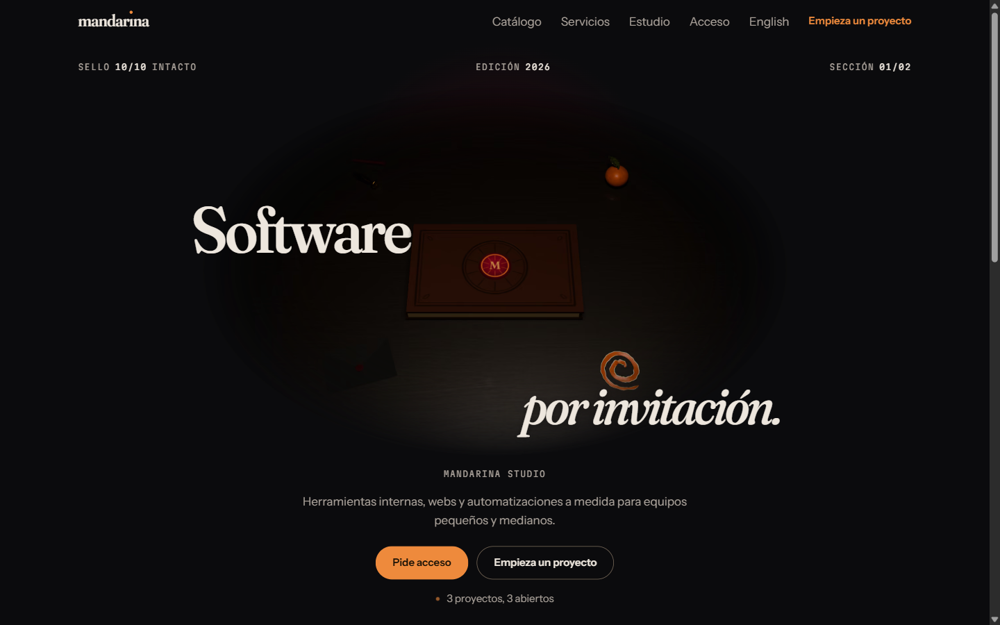
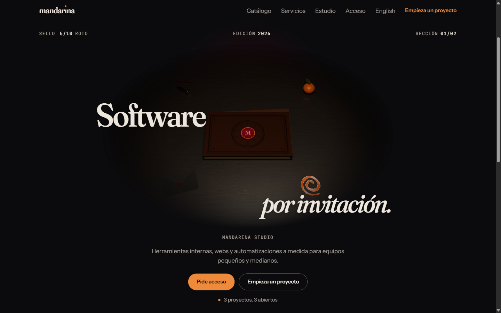
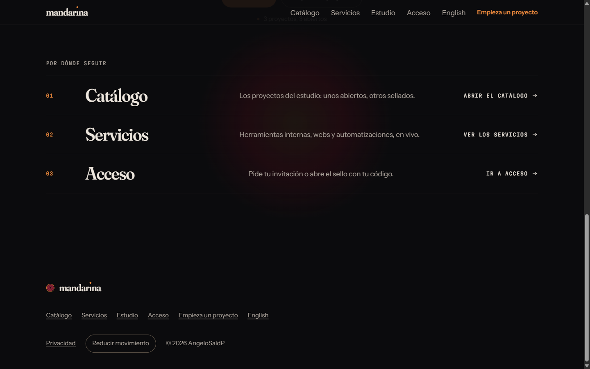
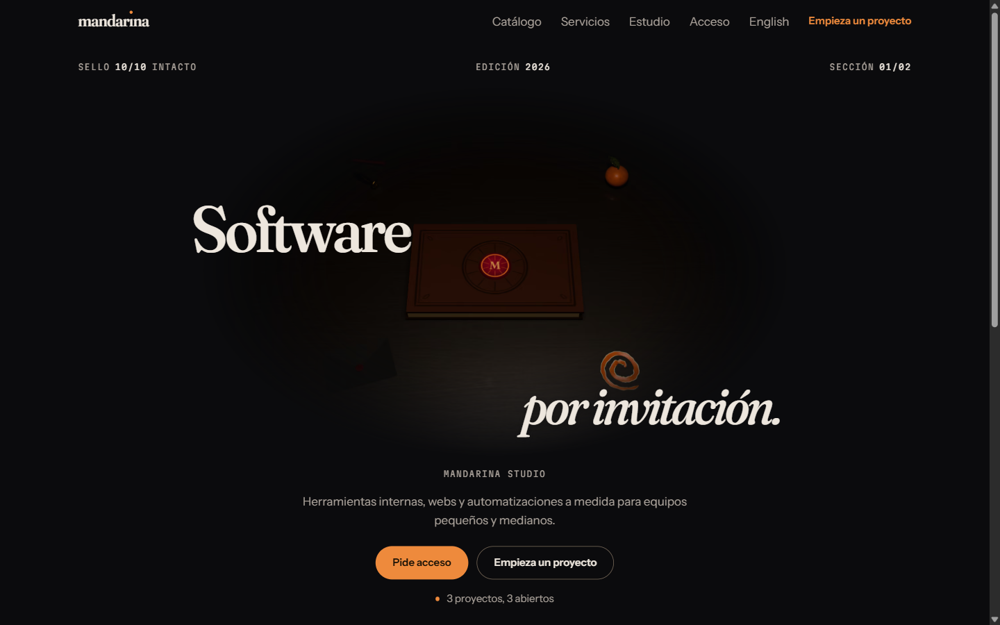
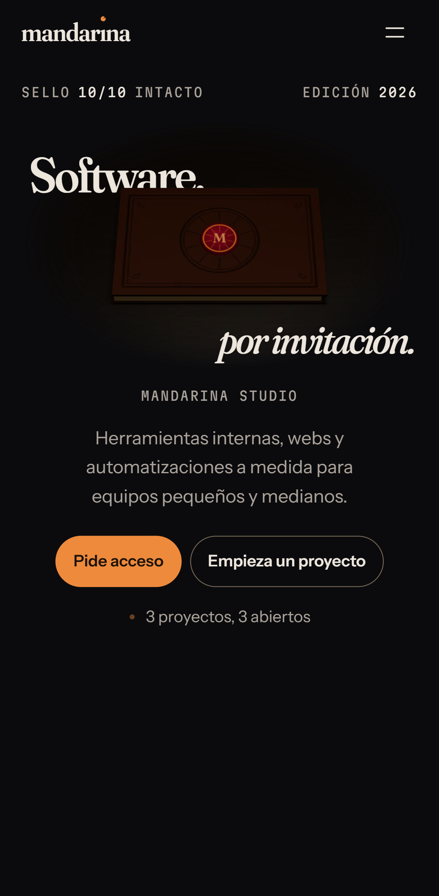
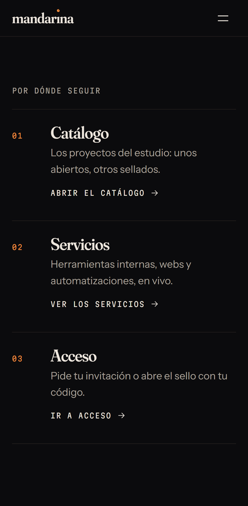

Inicio: el héroe desde el libro real
Página de Inicio del prototipo (tarea 3). El titular partido con el libro delante, el sello que se rompe al bajar (de 10/10 a roto) mientras el héroe avanza fotograma a fotograma, y tres puertas: Catálogo, Servicios y Acceso. Volver.
Escritorio, 1440 × 900








Teléfono (perfil Pixel 7)



